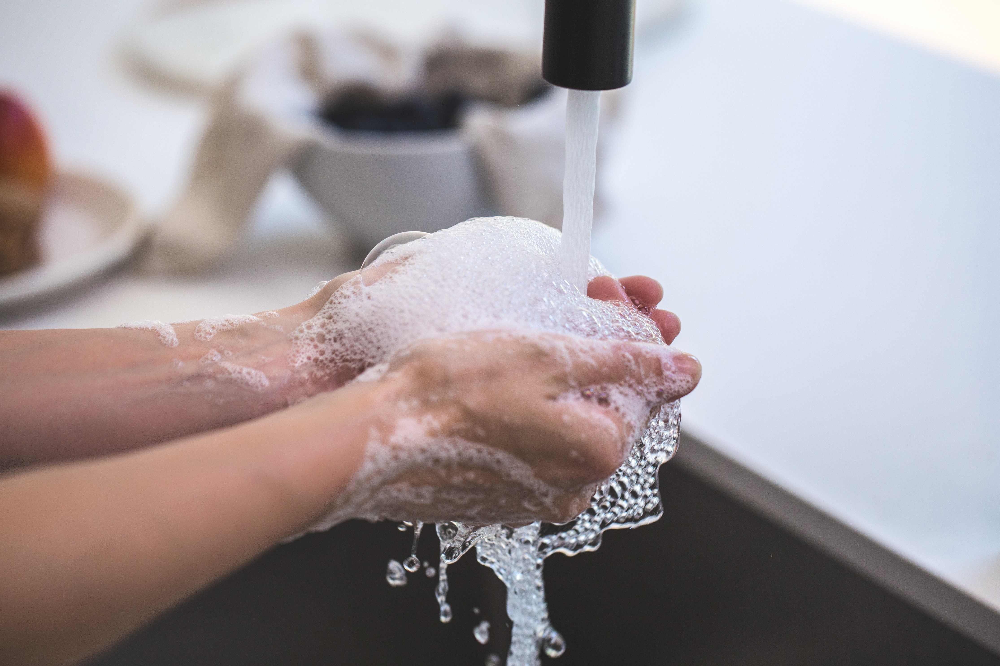
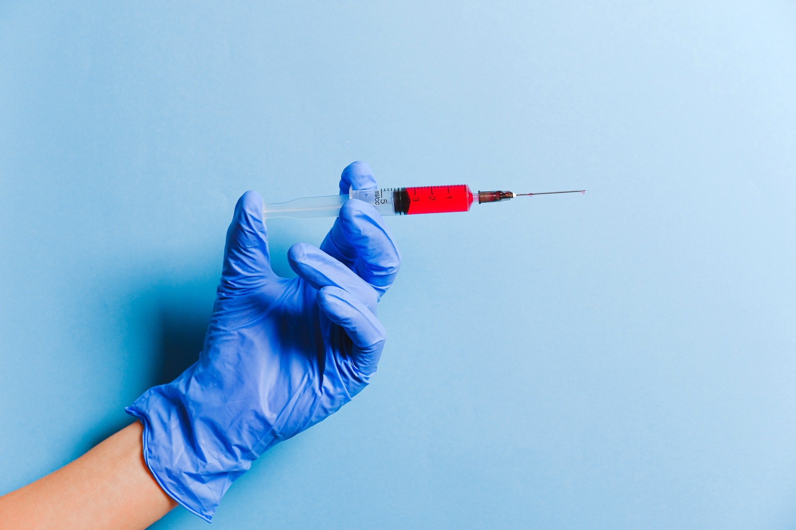

Preventive measures to reduce the chances of infection include staying at home, avoiding crowded places, washing hands with soap and water often and for at least 20 seconds, practising good respiratory hygiene and avoiding touching the eyes, nose or mouth with unwashed hands. The CDC also recommend proper hand hygiene after any cough or sneeze. Social distancing also includes that people stay at least six feet apart (1.83 meters).
For areas where commercial hand sanitisers are not readily available, the WHO provides two formulations for local production. In these formulations, the antimicrobial activity arises from ethanol or isopropanol. Hydrogen peroxide is used to help eliminate bacterial spores in the alcohol; it is "not an active substance for hand antisepsis". Glycerol is added as a humectant.
Some medical professionals recommend paracetamol (acetaminophen) over ibuprofen for first-line use. The WHO does not oppose the use of non-steroidal anti-inflammatory drugs (NSAIDs) such as ibuprofen for symptoms, and the FDA says currently there is no evidence that NSAIDs worsen COVID-19 symptoms.
While theoretical concerns have been raised about ACE inhibitors and angiotensin receptor blockers, as of 19 March 2020, these are not sufficient to justify stopping these medications. Steroids such as methylprednisolone are not recommended unless the disease is complicated by acute respiratory distress syndrome.
No medications are approved to treat the disease by the WHO although some are recommended by individual national medical authorities. Research into potential treatments started in January 2020, and several antiviral drugs are in clinical trials. Although new medications may take until 2021 to develop, several of the medications being tested are already approved for other uses or are already in advanced testing. Antiviral medication may be tried in people with severe disease. The WHO recommended volunteers take part in trials of the effectiveness and safety of potential treatments.
There is no available vaccine, but various agencies are actively developing vaccine candidates. Previous work on SARS-CoV is being utilised because SARS-CoV-2 and SARS-CoV both use the ACE2 receptor to enter human cells. There are three vaccination strategies being investigated. First, researchers aim to build a whole virus vaccine. The use of such a virus, be it inactive or dead, aims to elicit a prompt immune response of the human body to a new infection with COVID-19. A second strategy, subunit vaccines, aims to create a vaccine that sensitises the immune system to certain subunits of the virus. In the case of SARS-CoV-2, such research focuses on the S-spike protein that helps the virus intrude the ACE2 enzyme receptor. A third strategy is that of the nucleic acid vaccines (DNA or RNA vaccines, a novel technique for creating a vaccination). Experimental vaccines from any of these strategies would have to be tested for safety and efficacy.
On 16 March 2020, the first clinical trial of a vaccine started with four volunteers in Seattle. The vaccine contains a harmless genetic code copied from the virus that causes the disease.


There are public health tools that could slow down the spread of the coronavirus disease 2019 (COVID-19) outbreak, like washing hands with soap, not touching the face, staying away from patients etc. There are several other broad public health strategies used to put the brakes on a viral outbreak. The most important and sometimes confusing ones are isolation of sick patients and tracing their contacts, quarantine, and social distancing.
Social distancing, isolation and quarantine depend on public health officials' ability to detect cases or possible exposure to infection. Unlike quarantine and isolation, social distancing orders typically apply to whole communities and not specific individuals. These measures include postponing or cancelling mass gatherings like sporting events, concerts, religious gatherings, mass meetings etc.
Let's 'Flatten the Curve' Together,
By Staying Apart.